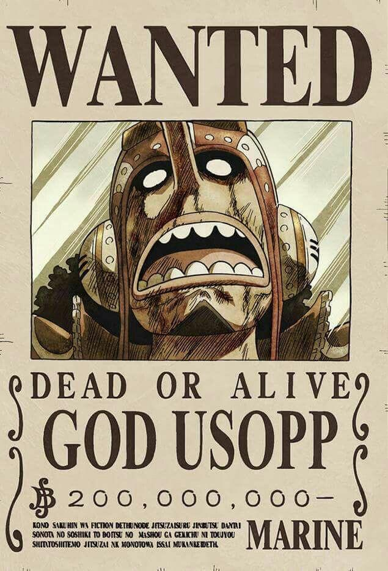

"GOD" USSOP

Ussop, most recently seen in the anime.
Ussop is also known as "God" Ussop. He stands as the sniper of the crew. He is the 4th member of the increasinly infamous and powerful Strawhat Pirates. He is only crewmate to ever go against Luffy. After losing his bout with him and figthing alongside the crew secretly he later rejoined the crew. He is usually called a coward but shows courage when needed. His dream is to become a brave warrior of the sea just like his father.

Ussop started out with a bounty of 30 million belly and eventually getting 200 million belly as a bounty.
One Piece Official Socmed Accounts